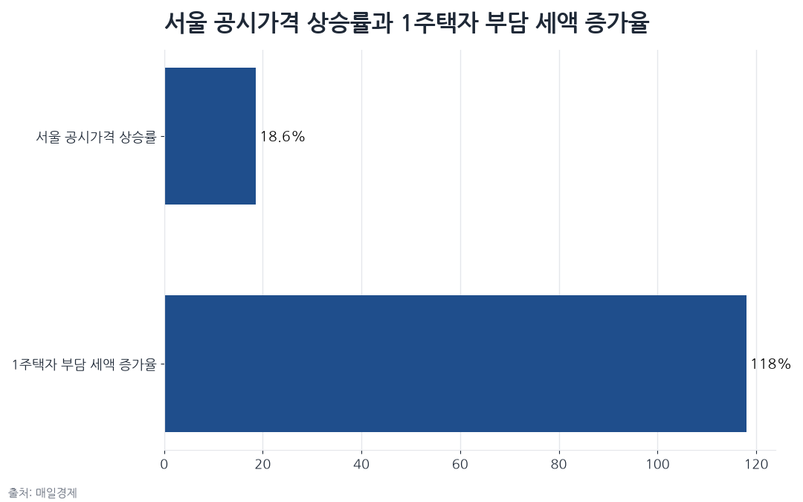

2026-11-26-1749-naver 발행 키트 · 이 페이지는 검색에 노출되지 않습니다.
제목
카테고리
일상태그
본문 (그림·표 포함)
휴대폰 블로그 앱에서는 그림이 같이 붙지 않을 수 있어요. 그때는 [글자만 복사] 후 아래 이미지를 저장해 [그래프1]·[표1] 자리에 첨부하세요.
12월이 코앞이라 세금 고지서가 슬슬 신경 쓰이는 때죠. 오늘은 종합부동산세 소식과, 내일 외출 전에 알아 두면 좋은 생활 정보를 함께 정리해 봤어요.
▶ 종부세 고지를 받은 분이 1년 새 19만 명 늘었어요
종합부동산세(집이나 땅의 공시가격 합계가 일정 기준을 넘으면 내는 세금)를 올해 고지받은 사람이 82만 명이라고 해요. 작년보다 19만 명이나 많아졌어요.
수도권을 중심으로 집값이 오른 영향이 크다고 전해졌어요. 예전에는 나와 상관없는 세금이라고 생각하던 분들도 이번엔 고지서를 열어 보셨을 수 있겠어요.
올해 종부세 고지 숫자 정리
| 항목 | 내용 |
|---|---|
| 고지 인원 | 82만 명 (1년 새 19만 명 증가) |
| 1주택자 고지 인원 | 50% 넘게 증가 |
| 1주택자 세액 | 두 배 넘게 증가 (118% 증가) |
| 서울 공시가격 | 18.6% 상승 |
출처: 매일경제
▶ 집 한 채 가진 분들도 남의 일이 아니에요
이번에 눈에 띄는 건 1가구 1주택자예요. 고지를 받은 1주택자가 50% 넘게 늘었고, 내야 할 세액은 두 배 넘게 커졌다고 해요.
서울 공시가격이 18.6% 올랐고, 1주택자의 부담 세액이 118% 늘었다는 숫자도 함께 나왔거든요. 집값이 멈춘 듯해도 세금은 공시가격을 기준으로 따라오니까, 체감이 더 클 수 있어요.

▶ 내년에는 더 늘어날 수 있대요
기사에서는 세제 개편 영향으로 내년에 대상이 더 늘 수 있다고 내다봤어요. 서울 집값 상승세는 사실상 멈췄는데도 그렇다는 거예요.
그러니 올해 고지서가 안 왔더라도 내년 공시가격과 세법 변경 내용은 한 번쯤 챙겨 보시면 좋겠어요.
▶ 고지서를 받았다면 이것만 확인하세요
저는 개별 세액이나 납부 기한을 확인한 자료가 없어서 숫자를 말씀드리진 못해요. 대신 고지서에 적힌 납부 기한과 납부 방법은 꼭 직접 확인해 보세요.
세액이 예상과 크게 다르다면 공시가격이나 보유 주택 수가 맞게 반영됐는지부터 살펴보는 게 순서예요. 궁금한 점은 국세청 안내나 세무서에 문의하는 게 가장 정확해요.
▶ 덤으로, 내일과 주말 외출 체크
금요일인 27일은 낮 최고기온이 21도까지 올라 예년보다 포근하대요. 다만 중부지방엔 비가 조금 내리고, 주말에는 추워진다고 해요. 겉옷은 얇게 입되 주말용 두꺼운 옷도 꺼내 두세요.
기차로 이동할 분들은 참고하세요. 철도노조 준법투쟁이 26일 시작되면서 서울역에 열차 지연 안내가 나왔고, 포항과 진주에서 출발한 열차는 10분 지연으로 표시됐어요. 시간 여유를 두고 나가시는 게 좋겠어요.
내일·주말 생활 체크
| 무엇이 | 내용 | 언제 | 어디서 확인 |
|---|---|---|---|
| 날씨 | 낮 최고 21도로 포근, 중부 비 조금, 주말엔 추위 | 27일(금)과 주말 | 기상청 예보 |
| 열차 | 철도노조 준법투쟁으로 지연 안내 | 26일 시작 | 코레일 운행 안내 |
출처: 연합뉴스, 세계일보
한 줄 정리하면, 세금은 고지서 속 기한부터, 외출은 시간 여유부터 챙기시면 돼요. 올해 종부세 고지서 받으신 분 계신가요? 댓글로 이야기 나눠 봐요.
이미지 (개별 복사·저장)
출처 (본문 맨 아래에 붙여넣기 권장)
- 매일경제, 종부세 고지서 ‘82만명’에 날아갔다…1년새 19만명 늘어, https://www.mk.co.kr/news/economy/12219702 - 매일경제, 종부세 82만명 고지 … 1년새 19만명 급증, https://www.mk.co.kr/news/economy/12219709 - 연합뉴스, 금요일 낮 최고 21도로 포근…중부에 비 조금, 주말엔 추위, https://www.yna.co.kr/view/AKR20261126169700530 - 세계일보, 철도노조 준법투쟁 첫날…‘열차 지연’에 발길 분주 [한강로 사진관], https://www.segye.com/newsView/20261126515183